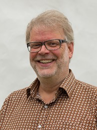
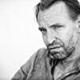

Bron - skaparna


Hans Rosenfeldt
Hans Petersson föddes 1964 i Borås, Västergötland. Han blev särskilt lång under puberteten och behandlas med hormoner för att begränsa sin tillväxt. Han nådde sin fulla längd på 2,06 meter vid fjorton års ålder. Han hade en karriär som basketbollspelare, och arbetade en kort tid som sjölejonstränare på Borås djurpark. Han hade också jobb som chaufför och lärare innan han bestämde sig för att bli skådespelare. Han tog sig efternamnet Rosenfeldt - hans mors flicknamn. Hans Rosenfeldt har varit programledare för ett flertal radioprogram. Varje söndagsförmiddag hördes han i Sveriges Radio numera nedlagda program Söndagsskolan. Som radiopersonlighet har han varit en återkommande panelmedlem på Sveriges Radio P1:s På minuten i över ett decennium. Rosenfeldt började som skådespelare i slutet av 1980-talet. Förutom små roller i tv spelade han med Nationalteatern i Göteborg i fem år. Så småningom tröttnade han på detta och sökte jobb på radioprogrammet Glädjetåget och började snart skriva för tv, inklusive tvåloperorna Rederiet och Tre kronor på 1990-talet.
Måns Mårlind
Måns Magnus Mårlind (född 29 juli 1969 i Vallentuna) är en svensk regissör och manusförfattare. Mårlind gick filmprogrammet vid Stockholms universitet, Sweden och American Film Institute tillsammans med Björn Stein, som han skulle inleda ett mångårigt regissörssamarbete med. Hanns störta genombrott var Awakening, som samlade in över 160 miljoner dollar över hela världen. Han skrev och ressigerade med Björn Stein. Andra filmer han har gjort är Sjätte dagen, SpungD, Disco kung-fu, De drabbade, Storm, Shelter, Känn ingen sorg och The Defeated.
Björn Stein

Björn Leonard Stein, född 17 november 1970 i Annedal i Göteborg, är en svensk regissör och filmklippare. Stein utbildade sig först inom kommunikation och media, därefter fortsatte han med studier i filmvetenskap, samt på Stockholms Filmskola. Han arbetar ofta tillsammans med regissören och manusförfattaren Måns Mårlind.
Tillbaka till toppen på sidan